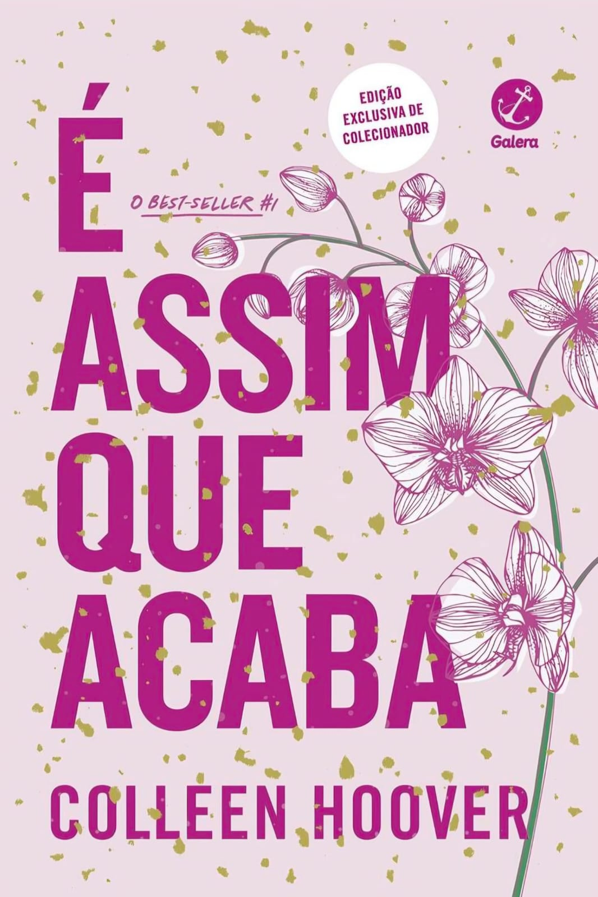
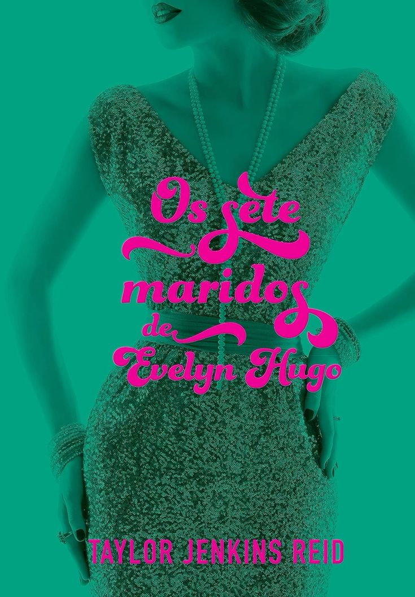
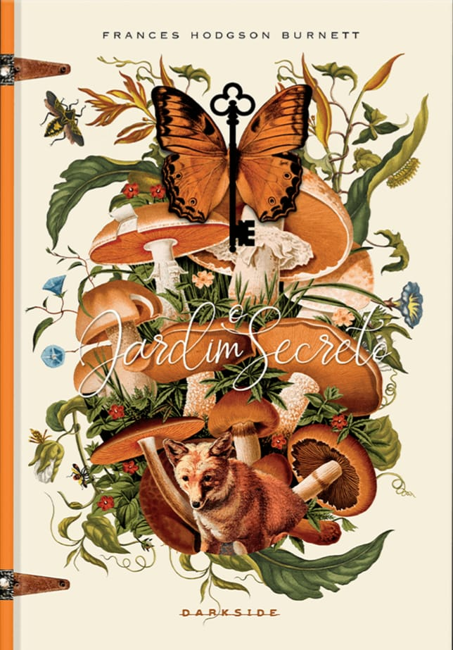
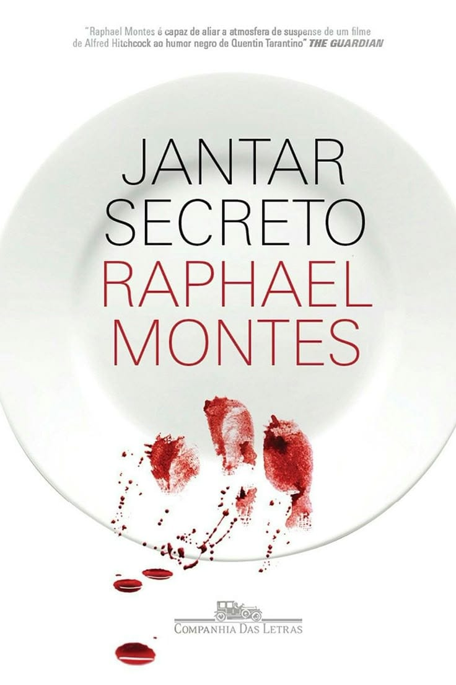
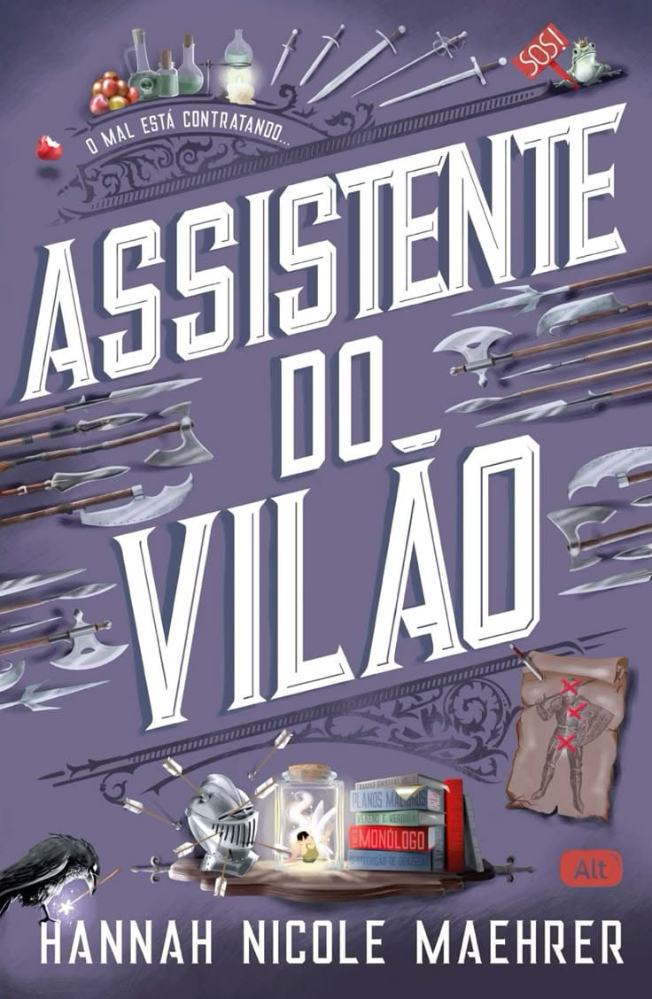
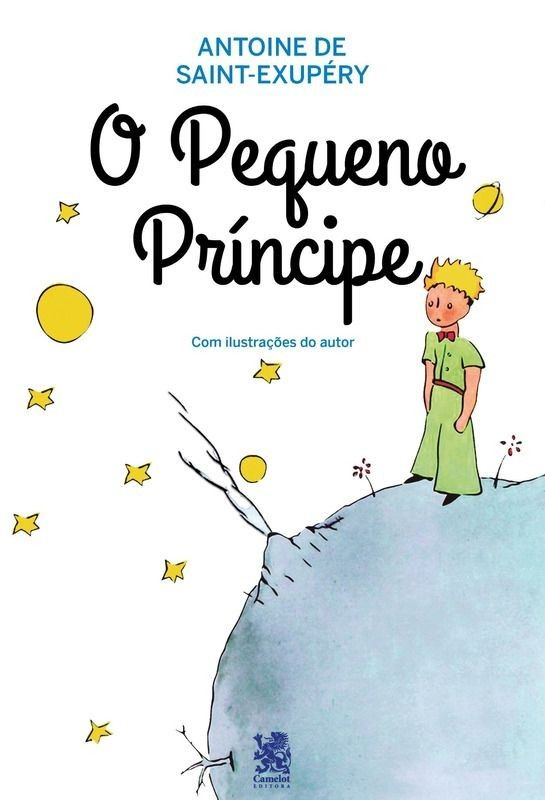
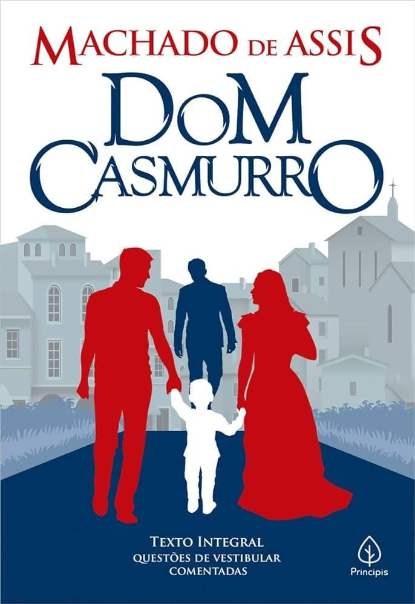
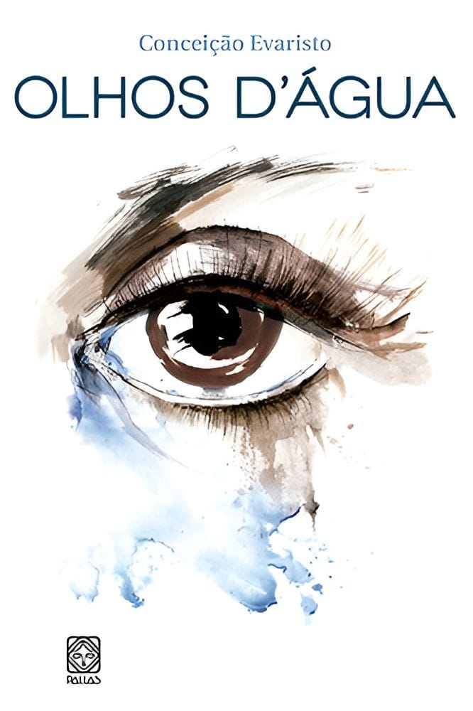
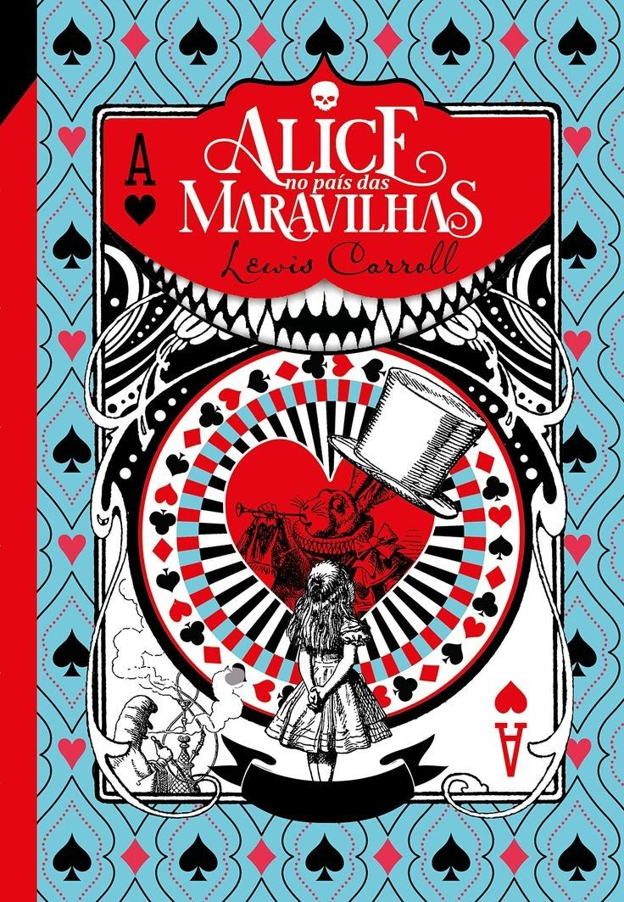
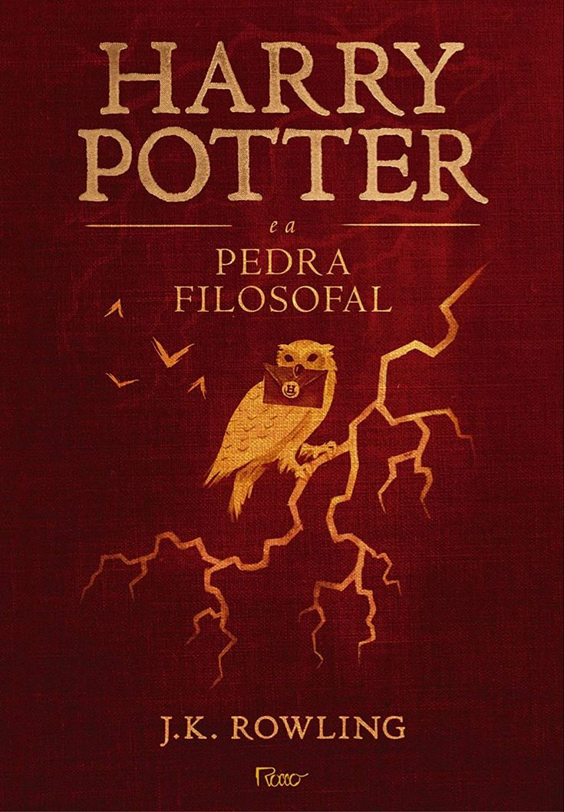

UNIDOS PELOS LIVROS
Conheça os melhores livros.
Encontre sua próxima leitura, explore histórias incríveis, conheça novos personagens e descubra livros que vão conquistar você. Aqui cada página pode levar você para um novo mundo!
APRENDA COM
UNIDOS PELOS LIVROS
Encontre sua próxima leitura, explore histórias incríveis, conheça novos personagens e descubra livros que vão conquistar você. Aqui cada página pode levar você para um novo mundo!

MELHORES LIVROS

Lily vive um relacionamento abusivo e precisa encontrar forças para escolher o que é melhor para sua própria vida
Tate e Miles se envolvem em uma relação baseada em regras, mas sentimentos e segredos tornam tudo mais complicado.

Evelyn revela os segredos de sua vida, seus sete casamentos e o grande amor que marcou sua história.

Mary descobre um jardim escondido e, ao cuidar dele, transforma sua vida e a de quem está ao seu redor.

Quatro amigos começam a organizar jantares secretos que acabam envolvendo perigosos mistérios e consequências.

Evie aceita trabalhar para um poderoso vilão e descobre que seu novo emprego é muito mais perigoso do que esperava.

Um pequeno príncipe viaja por diferentes planetas e aprende importantes lições sobre amor, amizade e a vida.

Bentinho conta sua história com Capitu enquanto tenta descobrir se ela realmente o traiu com seu melhor amigo.

A obra reúne contos que retratam a vida, as dificuldades e as experiências de personagens negros marcados pela desigualdade social.
Uma família é encontrada morta em sua própria casa, e a investigação busca descobrir quem foi responsável pelo crime.

Alice cai em um mundo fantástico onde encontra criaturas estranhas e vive situações absurdas enquanto tenta encontrar seu caminho.

Harry descobre que é bruxo e, em Hogwarts, vive aventuras enquanto tenta desvendar o mistério da Pedra Filosofal.